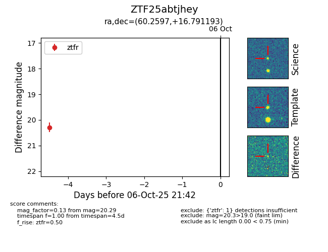

FINK: ZTF25abtjhey
Lasair: ZTF25abtjhey
ALeRCE: ZTF25abtjhey
ZTF25abtjhey (ztf,fink)
equatorial (ra, dec) = (60.2597,+16.79119)
galactic (l, b) = (174.8309,-26.42318)

last ztfr=20.29
1 ztfr detections